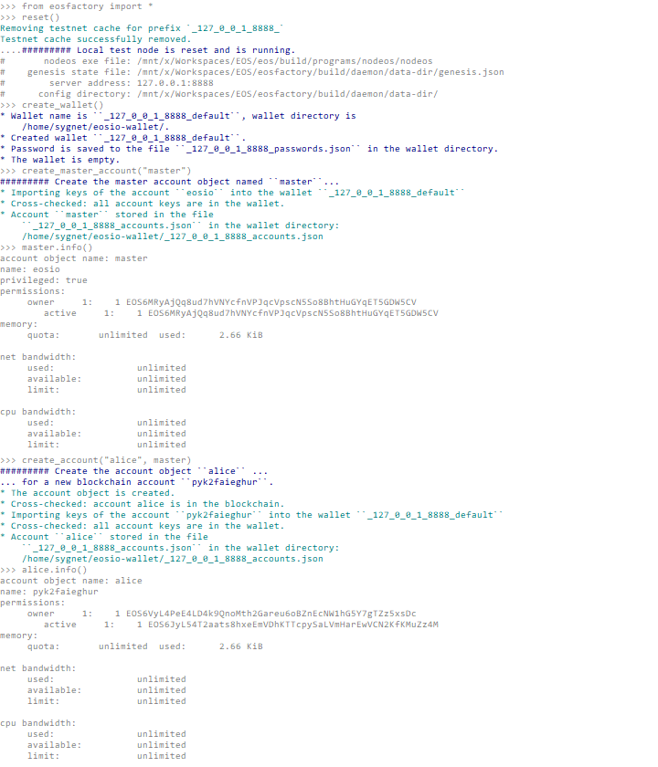

Master Account¶
This case demonstrates how the concept of master account is applied in EOSFactory.
Context¶
EOSFactory wraps EOSIO accounts using Python objects, i.e. instances of the Account class. A master account is also an instance of the Account class, but it plays a special role in EOSFactory: it spawns other accounts into existence.
The implementation of a master account is dependent on the context:
- On a local (private) testnet the master account refers to the
eosiosuper account. As such, it has limited capabilities, e.g. it cannot be associated with a smart-contract. - Whereas on a remote (public) testnet the master account refers to the initial account created by the user manually. It behaves like a normal account, apart from the fact that it is used to sponsor the creation of other accounts.
Use Case¶
Let’s consider two scenarios: first a local (private) testnet, and then a more complex situation of a remote (public) testnet.
Local testnet¶
Create a new Python session and import EOSFactory API:
$ python3
from eosfactory.eosf import *
First, let’s start a local testnet:
reset()
Next, we create a wallet and then we use the create_master_account command to create a global variable named master referencing the eosio account.
create_master_account("master")
master.info()
And finally, we show how the master variable can be used to create other accounts:
create_account("alice", master)
alice.info()
Here is the expected outcome:

Finally, stop the local testnet and exit Python CLI:
stop()
exit()
Remote testnet¶
Create a new Python session and import EOSFactory API:
$ python3
from eosfactory.eosf import *
First, we need to define a remote testnet and pass to EOSFactory the data of the account we control there:
testnet = Testnet("http://88.99.97.30:38888", "dgxo1uyhoytn", "5JE9XSurh4Bmdw8Ynz72Eh6ZCKrxf63SmQWKrYJSXf1dEnoiKFY", "5JgLo7jZhmY4huDNXwExmaWQJqyS1hGZrnSjECcpWwGU25Ym8tA")
We supply four parameters:
- an URL of a public node offering access to the testnet, e.g.
http://88.99.97.30:38888, - the name of an existing account on this testnet, e.g.
dgxo1uyhoytn, - the account’s owner & active private keys.
Next, we let EOSFactory configure and verify the testnet:
testnet.configure()
testnet.verify_production()
testnet.clear_cache()
Then, we proceed to create a global variable named master referencing the remote testnet account:
create_master_account("master", testnet)
master.info()
NOTE: In this case the create_master_account command takes an extra parameter, i.e. the reference to the remote testnet.
And finally, we show how the master variable can be used to create other accounts:
create_account("alice", master, buy_ram_kbytes=8, stake_net=3, stake_cpu=3)
alice.info()
NOTE: You might want to tweak with the extra parameters, i.e. buy_ram_kbytes, stake_net and stake_cpu.
Here is the expected outcome:

Exit Python CLI:
exit()
Test run¶
The examples presented in this document can be executed as a Python script:
python3 docs""/cases/05_master_account/case.py
You should get output similar to this: